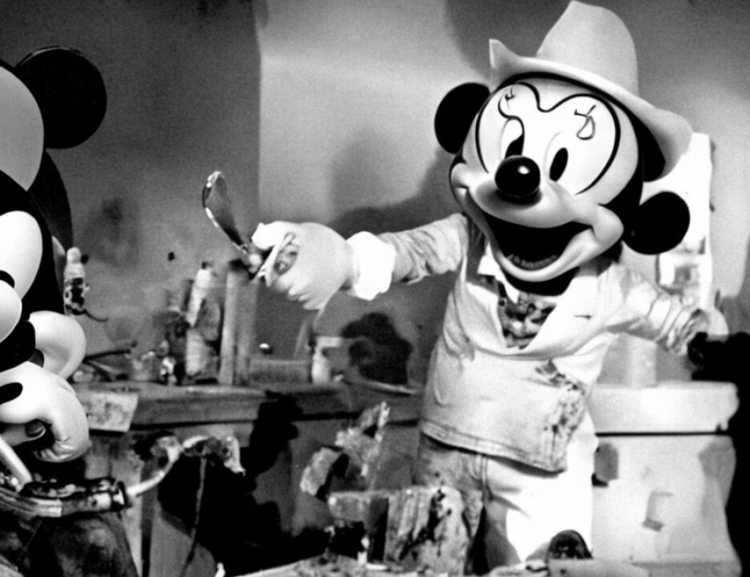

1 UNITED STATES DISTRICT COURT
SOUTHERN DISTRICT OF NEW YORK
2 ------------------------------x
3 UNITED STATES OF AMERICA
4 v. S(7) 98 Cr. 1023
5 USAMA BIN LADEN, et al.,
6 Defendants.
7 ------------------------------x
8
New York, N.Y.
9 July 10, 2001
10:00 a.m.
10
11
12 Before:
13 HON. LEONARD B. SAND,
14 District Judge
15 APPEARANCES
16 MARY JO WHITE
United States Attorney for the
17 Southern District of New York
BY: PATRICK FITZGERALD
18 MICHAEL GARCIA
Assistant United States Attorneys
19
20
21 DAVID RUHNKE
DAVID STERN
22 Attorneys for defendant Khalfan Khamis Mohamed
23
24
25
8753
1 (The jury was assembled at 10:00 a.m. and
2 deliberations resumed.)
3 THE COURT: Good morning.
4 THE JURY: Good morning.
5 THE COURT: Mr. Kenneally, will you take attendance,
6 please.
7 DEPUTY CLERK: Ladies and gentlemen of the jury,
8 please answer to your presence as your name is called.
9 (July roll called; all present)
10 DEPUTY CLERK: Madame Forelady, has the jury reached
11 a verdict on the Special Verdict Form?
12 THE FORELADY: Yes, we have.
13 DEPUTY CLERK: On Section I, The Gateway Factors,
14 Part A, Question 1, your answer is? How do you find?
15 THE FORELADY: The first one: We unanimously find
16 that this factor has been proved beyond a reasonable doubt
17 with regard to all of the capital counts.
18 DEPUTY CLERK: With the continuation on Part A of
19 Section I, Question 2.
20 THE FORELADY: Yes. 2, also the first one: We
21 unanimously find that this factor has been proved beyond a
22 reasonable doubt with regard to all of the capital counts.
23 DEPUTY CLERK: Question 3 of Part A, Section I.
24 THE FORELADY: Question 3, also the first one: We
25 unanimously find that this factor has been proved beyond a
8754
1 reasonable doubt with regard to all the capital counts.
2 DEPUTY CLERK: Part A, Question 4.
3 THE FORELADY: Question 4, the first one also: We
4 unanimously find that this factor has been proved beyond a
5 reasonable doubt with regard to all of the capital counts.
6 DEPUTY CLERK: Going to Section II, Statutory
7 Aggravating Factors, Part A, what is your answer?
8 THE FORELADY: The first one: We unanimously find
9 that this factor has been proved beyond a reasonable doubt
10 with regard to all the capital counts.
11 DEPUTY CLERK: Part A, Question 2.
12 THE FORELADY: Also the first one: We unanimously
13 find that this factor has been proved beyond a reasonable
14 doubt with regard to all of the capital counts.
15 DEPUTY CLERK: Part A, Question 3, your answer is?
16 THE FORELADY: Also the first one: We unanimously
17 find that this factor has been proved beyond a reasonable
18 doubt with regard to all of the capital counts.
19 DEPUTY CLERK: Continuing on Part A, Question 4.
20 THE FORELADY: Question 4, also the first one: We
21 unanimously find that this factor has been proved beyond a
22 reasonable doubt with regard to all of the capital counts.
23 DEPUTY CLERK: Skipping Part B, we go to Section III,
24 the Non-Statutory Aggravating Factors, Part A.
25 THE FORELADY: Part A is the last one: We do not
8755
1 unanimously find that this factor has been proved beyond a
2 reasonable doubt with regard to any of the capital counts.
3 DEPUTY CLERK: Continuing on Section III, Part B,
4 your answer is?
5 THE FORELADY: Is the first one: We unanimously find
6 that this factor has been proved beyond a reasonable doubt
7 with regard to all of the capital counts.
8 DEPUTY CLERK: Continuing Part A, Question C.
9 THE FORELADY: Question C is the first one: We
10 unanimously find that this factor has been proved beyond a
11 reasonable doubt with regard to all of the capital counts.
12 DEPUTY CLERK: Section IV, the Mitigating Factors,
13 how do you find as to A(1) through (3)?
14 THE FORELADY: A(1) through (3), the number of jurors
15 is ten.
16 DEPUTY CLERK: Part B, the number of jurors?
17 THE FORELADY: B, number of jurors is 11.
2